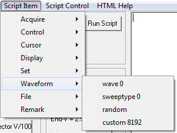

wave n Sets the type of AC waveform where integer
n is 0 to 8.
- 0 = Sine Wave
- 1 = Triangle Wave
- 2 = Square Wave
- 3 = Positive Fullwave Rectified Sine Wave
- 4 = Positive Fullwave Rectified Triangle Wave
- 5 = Positive Square Wave
- 6 = Negative Fullwave Rectified Sine Wave
- 7 = Negative Fullwave Rectified Triangle Wave
- 8 = Negative Square Wave
sweeptype 0 Sets
Sweep Type to AC Sweep.
sweeptype 1 Sets
Sweep Type to Slow Sweep.
random A special function that sets the AC waveform to a random pattern.
custom n When
n = 8192, the AC waveform table pointer is set to zero. When
n
is 0 to 4095, the value is entered in the AC waveform table and the
pointer is incremented. A zero output is 2048. Maximum positive
voltage is 0 and minimum negative voltage is 4095. There are 256 data
points in the AC waveform table.
sin16x A special function that sets the AC waveform to 960Hz sine wave.
Script Item
Main